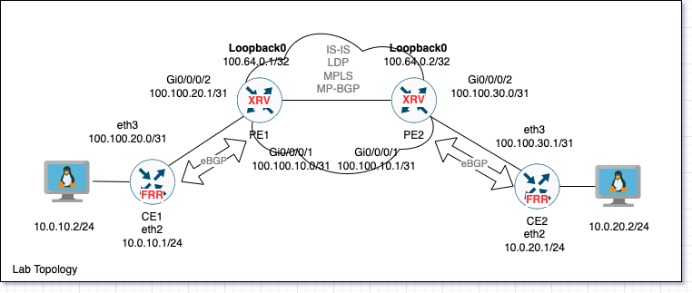
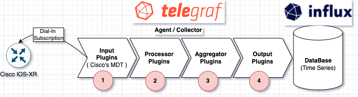
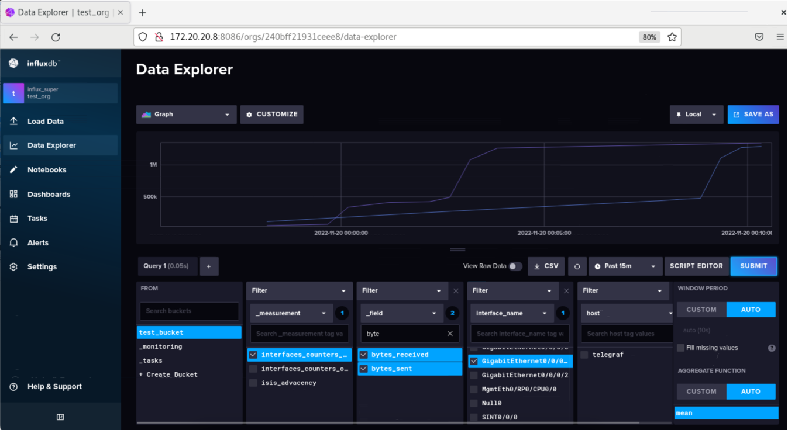
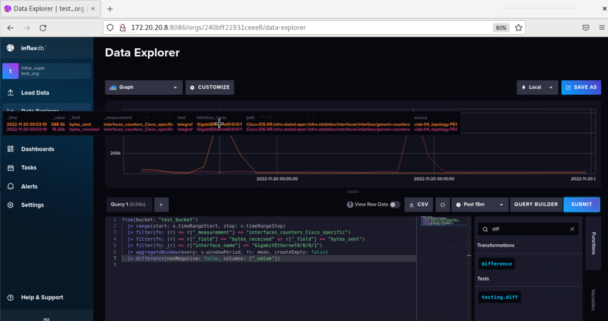
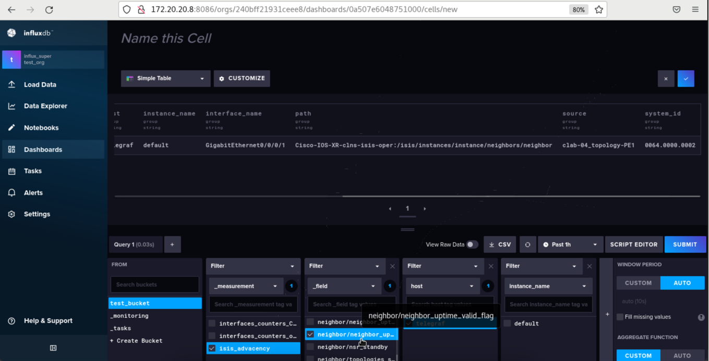

gNMI Network Automation (3/3) : gNMI Telemetry, Telegraf & InfluxDB
Table Of Contents
Introduction
This article is based on Damien Garros’s talk in NANOG 77 “Getting started with modern time series database”.
We are used to monitoring network devices using SNMP by pulling devices statistics through an RRD server (example Cacti), but a new approach (not so new) is replacing SNMP by relying on Streaming (Push) telemetry from device to server instead of pulling, by using gNMI (Network gRPC protocol originally developed by Google, now widely adopted by vendors).
Summary of steps will be taken :
- Setup Containerlab and prepare the IOS-XR image using Part1.
- Get to know a little bit abouyt gNMI and gRPC and how to read configuration templates for OpenConfig and Vendor Specific in Part2 .
- Start our testing Network topology.
- Configuring 2 IOS-XR PE/P routers using gNMI.
- Pulling and configuring both Telegraf and InfluxDB containers.
Note : All Lab files used in this article, you can find in my Github here .
Brief about topology

1st, we have 2 containerlab topology files, one for the Network topology that we are will be collecting telemtry data from, and one for the Telegraf (Collector) and InfluxDB (Time Streamed Data Database) .
The network topolgy consists of :
- 2 IOS-XR 6.5.1 PE/P routers : running a full L3VPN Backbone protocols, IS-IS/MPLS/LDP/MP-BGP and will be configured using gNMI configuration files you can find ready in the github page, I chose to confgiure them using gNMI so you can check how to use gNMI also for configuration management not just for Telemetry.
- 2 Open FRRouting containers runing as CE routers, configured with eBGP, configuration files are loaded onto them while initiating using Containerlab, so nothing to be done there, although its cool to get to know FRR, if you want to log onto the FRR container, you can use ‘# docker exec -it CE_NAME vtysh’, you will find its prompt is like Cisco’s IOS.
- 2 Linux containers connected to CEs, will be used to generate traffic using IPerf3.
Running the topology
- Initiate the topology using Containerlab :
$ containerlab deploy -t 04_topology.clab.yml
The containlab template loks like follows, you can also find it here.
name: 04_topology
topology:
nodes:
# CEs using RRouting open image
CE1:
kind: linux
image: frrouting/frr:v7.5.1
binds: # Binds used to copy files to the created containers at start
# 1) FRR uses the Dameon file to check whiches protocols to spin up as it runs as seprate process
# same daemons file will be used on both CEs as they are running the same protocols.
- template_config/04_CE1_FRR_daemons:/etc/frr/daemons
# 2) Router configuration is loaded configuring interfaces, and eBGP session.
- template_config/04_CE1_FRR_conf:/etc/frr/frr.conf
CE2:
kind: linux
image: frrouting/frr:v7.5.1
binds:
- template_config/04_CE1_FRR_daemons:/etc/frr/daemons
- template_config/04_CE2_FRR_conf:/etc/frr/frr.conf
# Backbone PEs (ISIS/MP-BGP/MPLS)
PE1:
kind: vr-xrv9k
# To be able to use this image, you need to check Part 1 and 2 so you can create an IOS-XR container.
image: vrnetlab/vr-xrv9k:7.2.1
PE2:
kind: vr-xrv9k
image: vrnetlab/vr-xrv9k:7.2.1
PC1:
kind: linux
image: praqma/network-multitool:latest
# Installing IPerf3 at startup
PC2:
kind: linux
image: praqma/network-multitool:latest
links:
- endpoints: ["PC1:eth1", "CE1:eth2"]
- endpoints: ["CE1:eth3", "PE1:eth3"]
- endpoints: ["PE1:eth2", "PE2:eth2"]
- endpoints: ["PE2:eth3", "CE2:eth3"]
- endpoints: ["CE2:eth2", "PC2:eth1"]
The IOS-XR images will take 10 to 15 minutes, you can follow its progressusing Docker logs, you should see the following message when its fully started up :
$ docker logs -f clab-04_topology-PE1
.......
2022-11-19 20:01:16,258: launch INFO Startup complete in: 0:08:11.193191
- FRR CEs are already configured (configuraiton under the
template_config/04_CE1_FRR_conf & template_config/04_CE2_FRR_conf), now to configure the Linux containers interfaces and default gateway, create or run the file on Github, simply configuring the Linux interfaces :
#!/bin/sh
sudo docker exec clab-04_topology-PC1 ip link set eth1 up
sudo docker exec clab-04_topology-PC1 ip addr add 10.0.10.2/24 dev eth1
sudo docker exec clab-04_topology-PC1 ip route add 10.0.20.0/24 via 10.0.10.1 dev eth1
sudo docker exec clab-04_topology-PC1 apk add iperf3
sudo docker exec clab-04_topology-PC2 ip link set eth1 up
sudo docker exec clab-04_topology-PC2 ip addr add 10.0.20.2/24 dev eth1
sudo docker exec clab-04_topology-PC2 ip route add 10.0.10.0/24 via 10.0.20.1 dev eth1
sudo docker exec clab-04_topology-PC2 apk add iperf3
- To configure the PEs, using gNMI, make sure to have gNMIC tool installed , then run the following 2 commands under the gnmi_config directory : Please find the configuration files in the following links:
$ gnmic -a clab-04_topology-PE1 --insecure -u admin -p admin -e json_ietf set --request-file 04_xrv_pe1_gnmi.yml
$ gnmic -a clab-04_topology-PE2 --insecure -u admin -p admin -e json_ietf set --request-file 04_xrv_pe2_gnmi.yml
For this gNMI configuration file, you can check the previous article where you will find a detailed description of each configuration part.
Now, the testing network topology is readymoving to our main scope, Telemetry.
Our telemetry setup now
Before we get into the details, lets start by pulling the needed containers :
docker pull telegraf
docker pull influxdb
We will use containerlab replacing Docker Compose to spin up the containers wth their configuration, before running the container, we will have a brief about the tools.
Telegraf (Collector)

There is 2 ways in subscribing to gNMI telemtry:
- Dial-Out : you configure your network device to initiate the TCP session to the collectore and stream out the configured telemetry points, not recommended as it means you need to configure the subscription Metrics on each node, and in case you need to do a change, you need to roll out these changes to all devices.
- Dial-In : We use this method in our Lab , we only allow gNMI service/port on our IOS-XR devices, then we do all the sunscription configuration on our gNMI Collector (Telegraf).
Telegraf is the collector agent which will Dial-In/subscribe to a Metric on the device, Telegraf has a plugin for gNMI developed by Cisco initially that enables configuration of gNMI telemtry, since Telegraf is not only usef for gNMI .
To understand configuraiton of the Telegraf Container, you have :
- Agent : In this configuration, you would specify interval in which measurements are taken, output batch size, since telegraf aggregates the metrics before sending them out to the Influx database, so you configure the batch size, and the buffer limit for it, so when it momentarliy lose connection to the database, it can cash those metrics until connection is restored and then send them all at once, and so on, here am using the default generated configuration.
[agent]
interval = "10s"
round_interval = true
metric_batch_size = 1000
metric_buffer_limit = 10000
collection_jitter = "0s"
flush_interval = "10s"
flush_jitter = "0s"
precision = "0s"
hostname = "telegraf"
omit_hostname = false
- Input plugins : are responsible for transforming incoming data stream from device format (Example : Json , Binary, Protobuffs, etc) to Telegraf Metics format ( Measurement Name, Tages, Fields, Timestamp ), in our case Cisco developed a gNMI Input plugin which has been merged to the main Git for Telegraf which subscribes to gNMI Paths. For the path that I used , please refer to my previous gNMI guide, you can use either Cisco’s Yang Paths or OpenConfig’s , here I will be using OpenConfig’s, this will make it easier to use across many vendors.
[[inputs.gnmi]]
addresses = ["clab-testing_topology-PE1:57400"]
username = "admin"
password = "admin"
redial = "10s"
Now we can include multiple subscriptions under the same gNMI input module, you can name each one with your preferred description, for Paths, you can use either the OpneConfig ones or the Vendor specific ones, for me i prefer to use gNMIC tool to check what is the output for each module before deciding to use which path, for details on how to use gNMIC, you can refer to my previous article. We are creating 2 subscriptions in this example. 1st example is for interface counters, which we want to take on a “Sample” basis in time intervals:
[[inputs.gnmi.subscription]]
name = "interfaces_counters"
origin = "openconfig-interfaces"
#path = '/interfaces/interface[name="GigabitEthernet0/0/0/1"]/state/counters'
path = '/interfaces/interface/state/counters'
subscription_mode = "sample" # you can find the modes in the gNMI standard
# Setting sample to 30 Seconds, because on Cisco IOS-XR interval is minimum at 30 Seconds
sample_interval = "30s"
heartbeat_interval = "60s"
Before our next article and Grafana integration, InfluxDB provides a very good WebUI just like Grafana’s to see your data collected, just to show you after spinning up our configuration, Interfsces output with some Iperf traffic generation from our linux edge containers looks as follows in Influx dashboard :
2nd example, we want to get the IS-IS Adjacency table but in structured way instead of relying on the old SSH/CLI parsing way, you can export/Putput the data in Json format to your script for example, this subscription wont create a graph, instead, its more for Data gathering, this shows you the extensibilty of Telemetry in gNMI, not just for counters, but it can be used for Operational data :
[[inputs.gnmi.subscription]]
name = "isis_advacency"
origin = "Cisco-IOS-XR-clns-isis-oper"
path = '/isis/instances/instance[instance-name="default"]/neighbors'
subscription_mode = "on_change" # you can find the modes in the gNMI standard
heartbeat_interval = "60s"
- Processor & Aggregator plugins: processors are used to filter, decorate, or trasform input as its coming in, unlike aggregators, which are applied over a period of inputs to produce outputs like mean, minimum, maximum and count.
- Output Plugins: Just like Input plugins, this shapes data towards the external resource that will store or analyze the data, in our case, we will be using InfluxDB, which provides and Output Plugin for Telegraf.
[[outputs.influxdb_v2]]
urls = ["http://clab-03_ansible_iosxr_linux_telemetry-influxDB:8086"]
token = "Df-veQgYbF i m40KZfT×q1zHUN3- - IRV4WTHdfXsK_ SUNCiX6171pjGZMHOgYl jmgG-BiwMprBLocpX4L82xg=="
organization = "test_org"
bucket = "test_bucket"
You can find the fullconfiguration file fo Telegraf here, we will use it later while spinning up the container.
InfluxDB (Time Streaming Database)
We will use InfluxDB to store the telemetry and collector’s data, so we can graph it either using Grafana or in our case, InfluxDB now offers some of Grafana’s functionallity, we will use Grafana in the next article. To configure Influx, its very simple, you just need to set some Env variables as per their official Docker guide , which we will do using ContainerLab.
Running the Telegraf and InfluxDB contianers
Now we will use a second ContainerLab file to initiate the Telegraf+Config and InfluxDB+ENV variables
Note : I kept the Network topology setup separate from Telegraf&InfluxDB t give you the ease of reconfiguring telemtry without having to destroy and redeploy the IOS-XR images which takes a long time to start.
Okey, the 2nd containerlab file looks as follows , link to github :
# 04_telemetry.clab.yaml
name: 04_telemetry
topology:
nodes:
# InfluxDB ------------------------------------------------------------------------
influxDB:
kind: linux
image: influxdb:latest
ports:
## This port will be used for Telegraf to connect to
- 8086:8086
env:
DOCKER_INFLUXDB_INIT_MODE: setup
DOCKER_INFLUXDB_INIT_USERNAME: influx_super
DOCKER_INFLUXDB_INIT_PASSWORD: 1020304050607
DOCKER_INFLUXDB_INIT_ORG: test_org
DOCKER_INFLUXDB_INIT_BUCKET: test_bucket
DOCKER_INFLUXDB_INIT_ADMIN_TOKEN: "Df-veQgYbF i m40KZfT×q1zHUN3- - IRV4WTHdfXsK_ SUNCiX6171pjGZMHOgYl jmgG-BiwMprBLocpX4L82xg=="
# Telegraf ------------------------------------------------------------------------
telegraf:
kind: linux
image: telegraf:latest
binds:
- telegraf.conf:/etc/telegraf/telegraf.conf:ro
ports:
- 57000:57000
Run
$ containerlab deploy -t 04_telemetry.clab.yaml
You can check no errors on the Telegraf connection to the InfluxDB or to the PE1 gNMI subscription using docker logs :
root@vnet:/home/vnet/github_2# docker logs -f clab-04_telemetry-telegraf
2022-11-19T21:57:36Z I! Using config file: /etc/telegraf/telegraf.conf
2022-11-19T21:57:36Z I! Starting Telegraf 1.24.3
2022-11-19T21:57:36Z I! Available plugins: 222 inputs, 9 aggregators, 26 processors, 20 parsers, 57 outputs
2022-11-19T21:57:36Z I! Loaded inputs: gnmi
2022-11-19T21:57:36Z I! Loaded aggregators:
2022-11-19T21:57:36Z I! Loaded processors:
2022-11-19T21:57:36Z I! Loaded outputs: influxdb_v2
2022-11-19T21:57:36Z I! Tags enabled: host=telegraf
2022-11-19T21:57:36Z I! [agent] Config: Interval:10s, Quiet:false, Hostname:"telegraf", Flush Interval:10s
After that log into the Linux container clab-04_topology-PC2 , and 1st test connectivity to clab-04_topology-PC1, and then if ping is okey, start IPerf3 server on PC2 :
clab-04_topology-PC2#ping -c 3 10.0.10.2
PING 10.0.10.2 (10.0.10.2) 56(84) bytes of data.
64 bytes from 10.0.10.2: icmp_seq=1 ttl=60 time=19.4 ms
64 bytes from 10.0.10.2: icmp_seq=2 ttl=60 time=1.57 ms
64 bytes from 10.0.10.2: icmp_seq=3 ttl=60 time=1.44 ms
3 packets transmitted, 3 received, 0% packet loss, time 2003ms
rtt min/avg/max/mdev = 1.438/7.469/19.395/8.433 ms
clab-04_topology-PC2# iperf3 -s
-----------------------------------------------------------
Server listening on 5201
-----------------------------------------------------------
And on clab-04_topology-PC1 lets generate some traffic :
bash-5.1# iperf3 -c 10.0.20.2 -u -b 1000M
Connecting to host 10.0.20.2, port 5201
[ 5] local 10.0.10.2 port 53437 connected to 10.0.20.2 port 5201
[ ID] Interval Transfer Bitrate Total Datagrams
[ 5] 0.00-1.00 sec 98.2 MBytes 824 Mbits/sec 71323
[ 5] 1.00-2.00 sec 95.9 MBytes 804 Mbits/sec 69605
[ 5] 2.00-3.00 sec 98.3 MBytes 824 Mbits/sec 71356
[ 5] 3.00-4.00 sec 98.3 MBytes 825 Mbits/sec 71405
[ 5] 4.00-5.00 sec 98.5 MBytes 827 Mbits/sec 71556
[ 5] 5.00-6.00 sec 98.2 MBytes 823 Mbits/sec 71283
[ 5] 6.00-7.00 sec 97.9 MBytes 821 Mbits/sec 71070
[ 5] 7.00-8.00 sec 98.2 MBytes 824 Mbits/sec 71290
[ 5] 8.00-9.00 sec 98.1 MBytes 823 Mbits/sec 71223
[ 5] 9.00-10.00 sec 98.4 MBytes 825 Mbits/sec 71455
- - - - - - - - - - - - - - - - - - - - - - - - -
[ ID] Interval Transfer Bitrate Jitter Lost/Total Datagrams
[ 5] 0.00-10.00 sec 980 MBytes 822 Mbits/sec 0.000 ms 0/711566 (0%) sender
[ 5] 0.00-10.26 sec 245 KBytes 196 Kbits/sec 2.803 ms 710324/710498 (1e+02%) receiver
iperf Done.
You can generate traffic for somewhile and then lets head to InfluxDB to see our telemetry plot.
Graphs on InfluxDB
You are able to login to the Web portal of the InfluxDB from your local network, to get ip of the InfluxDB, you can use Containerlab to inspect all the current running nodes :
containerlab inspect -a | grep influx
| 1 | 04_telemetry.clab.yaml | 04_telemetry | clab-04_telemetry-influxDB | 2797cc685296 | influxdb:latest | linux | running | 172.20.20.8/24 | 2001:172:20:20::8/64 |
Open your web browser to http://172.20.20.8:8086 with user influx_super and password 1020304050607 which we setup in the 04_telemetry.clab.yaml. Go to Data Explorer , then choose filter as following in snapshot : 1- this shows the interface counters of interface Ge0/0/1, but this accumalates, it does not show the current count only , as on Cisco interface counters just adds up over time, to show the diffirence only , go to step 2.

2- Change view to ‘script editor’ and search ‘filter function’ for ‘diffirence’ function , add it, and remove the line with ‘yield mean’ now you only can see the increase/decrease of bytes count on the interface.

Lets also have a look at the ISIS adjaceny neibors on PE1 , this is the benefit of gNMI, it provides more than just counters, you can see even the routing table on change.

Thats it, you can tweek the telegraf.conf file to add your telemetry subscriptions which you can get from the yang files described in Part 2 of this guide .
Final thing , to destroy all the created containers, just type
$ containerlab destroy -a
I hope you enjoyed this article :) , next will be intergration with Grafana .
References
- Blog - Network monitoring using Grafana/gNMI/SNMP
- NANOG 77 - Demonstration of Network Monitoring with Grafana
- NANOG77 - Demonstration Lab Files (Github)
- Blog - CISCO TELEMETRY TUTORIAL
- Doc - Telemetry Configuration Guide for Cisco
- Github - Cisco’s MDT Plugin for Telegraf
- InfluxDB Docs - Check for graphs functions